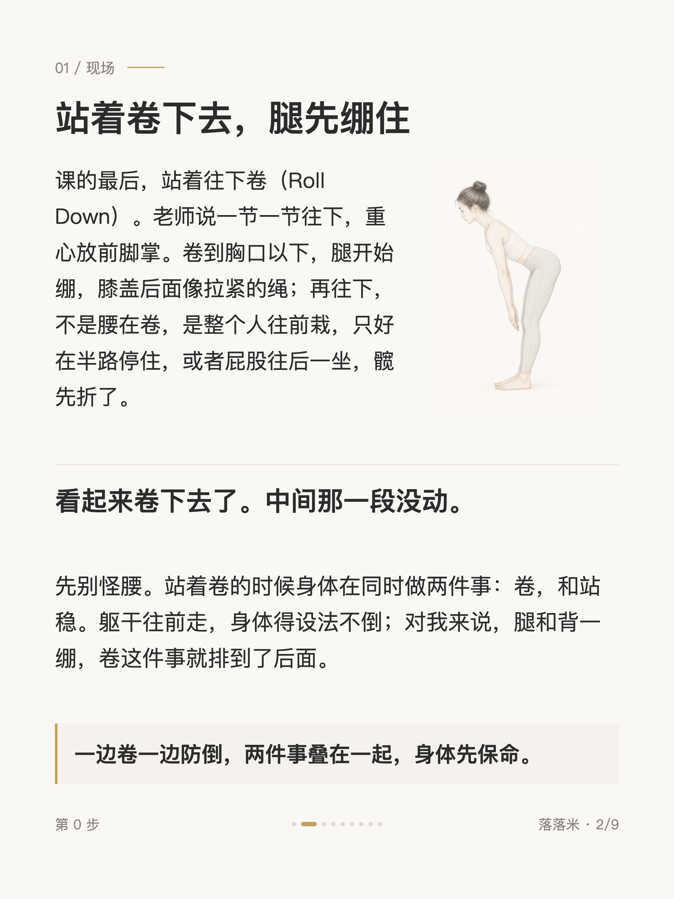
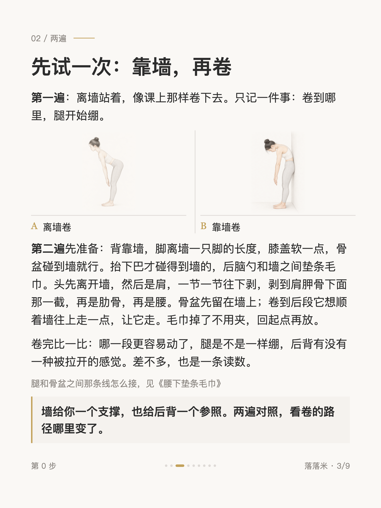
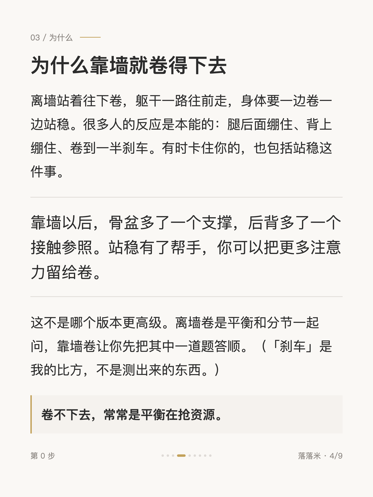
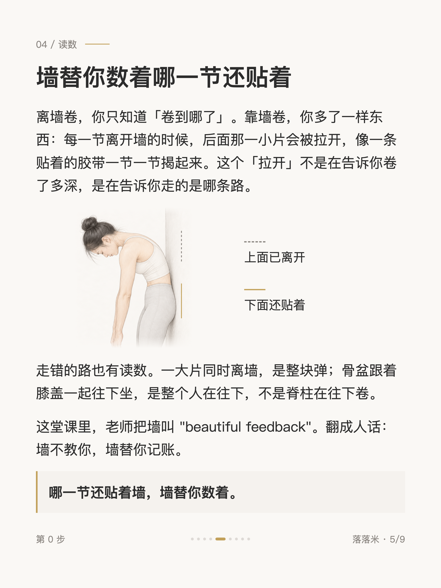
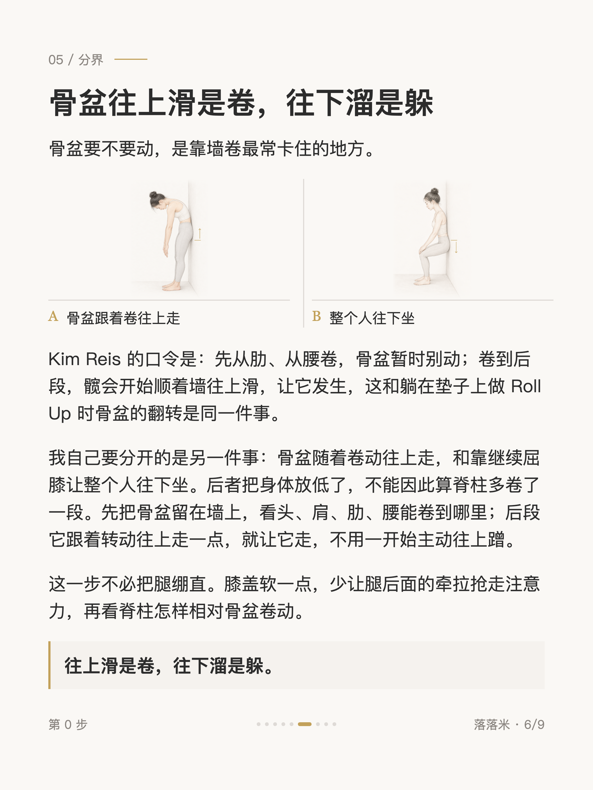
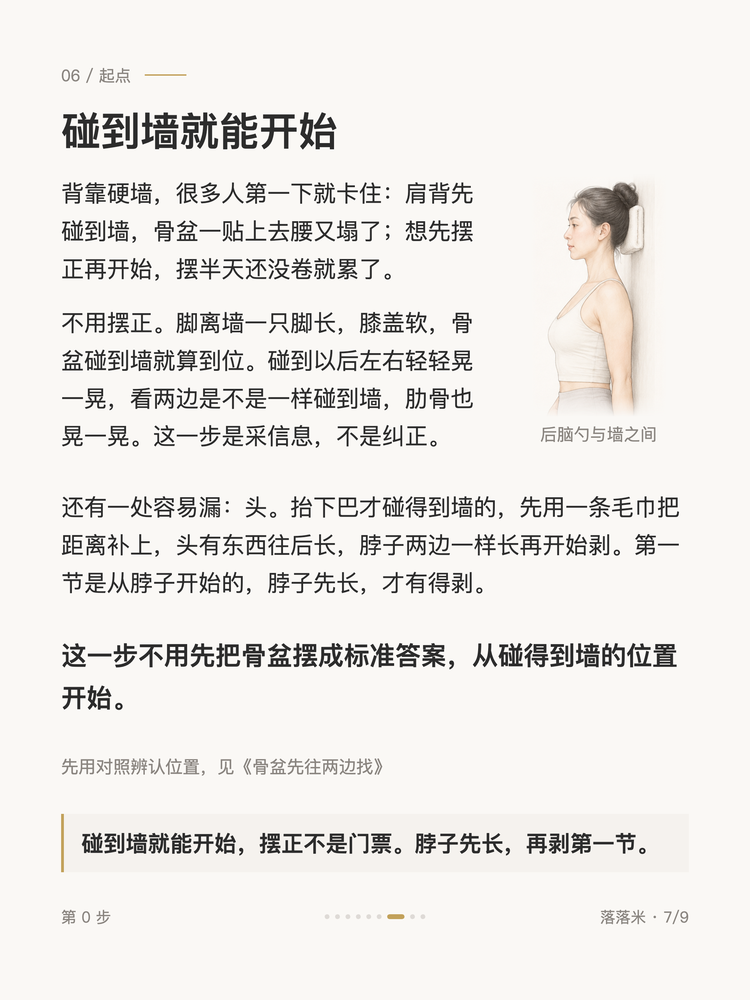
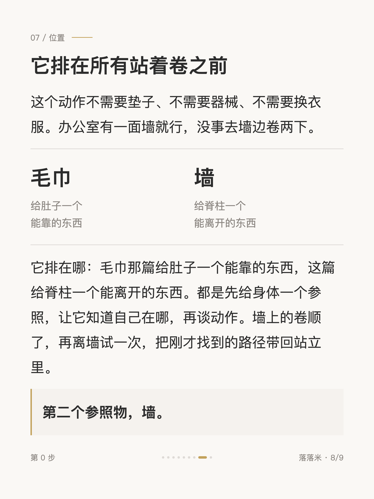
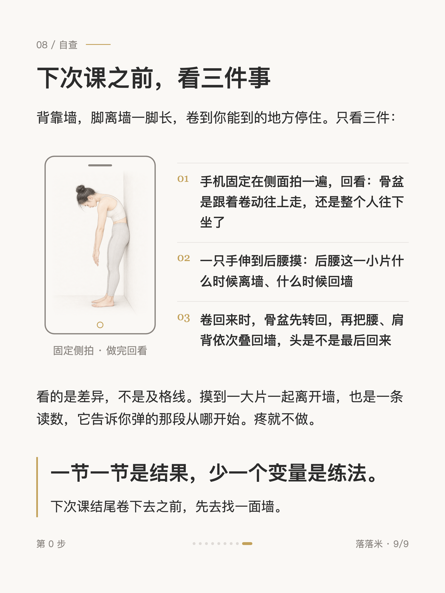

第 0 步 #004
普拉提课尾那个卷下去，背靠墙再做一遍

1 / 9

2 / 9

3 / 9

4 / 9

5 / 9

6 / 9

7 / 9

8 / 9

9 / 9
← 左右滑动浏览全部卡片 →
站着往下卷，我以前很不喜欢。老师说重心放前脚掌，一节一节往下，我卷到一半就觉得要倒，腿绷得死紧，一点都不舒畅。后来跟着一节靠墙的课做同一个动作，背贴着墙卷，第一次卷出了「拉开」的感觉，后背一节一节被揭开那种。
差别在墙替我托住了一半：离墙卷是一边卷一边站稳，靠墙卷让我先把卷这件事答顺。这篇写的就是这个，为什么靠墙更容易卷下去，骨盆该跟着卷还是整个人坐下去了，还有背驼的人怎么开始。它不需要场地，我现在工作没事就去墙边卷两下。
卡片里有两遍对照和三个自查，自查都是看得见摸得到的。毛巾又出现了一次，这回垫在后脑勺和墙之间。逐节卷动卷不顺的，先从墙开始。